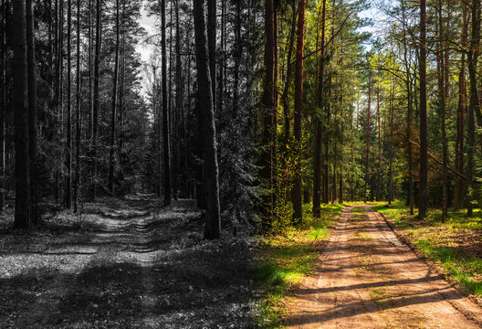

As you explore more of the area, you mangae to find footprints on the mud. You follow these prints and it leads to a gravel trail, in which you follow. At the end of the trail, you see two paths, one going left and the other going right. A sign, sitting in between both paths, reads (Left side: Danger) (Right side: Safe). Which will you choose?
1. Go left {Click here}
(2) Go Right {Click here}